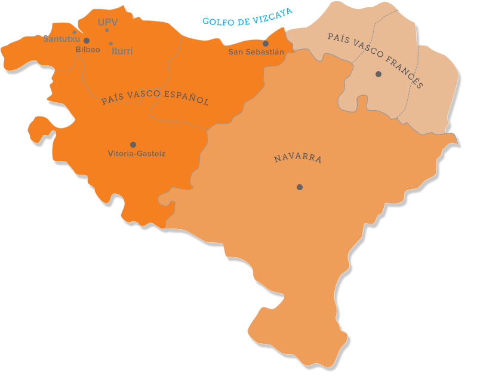

EUSKADIKO MEMEAK
En Euskadi se crean muchos memes autoreferenciales, que se
suelen ver y crear en Instagram. Hay memes de todo tipo, ya sean
refenciales al terrorismo, o a los tópicos generados en esta
comunidad autónoma. Memes sobre el after y before. De todos los
lugares que crean situaciones jocosas en su plenitud.
Santutxu,Iturri, UPV, y más.
Clicka en el mapa de imagenes para ver los memes de su
territorio:
